STEP 1: Fix The Center 3x3 Blocks.
The first step is to fix the six 3x3 center blocks. Just like a 3x3 cube, the relative positions of the 3x3 center blocks are determined by the center piece on each side. So for this part, it is easier than a 4x4 cubes.
We can solve the center block using similar methods as the 4x4 cube.
For each 3x3 center block, we usually get the center 1x3 block first and then add the two other 1x3 blocks.
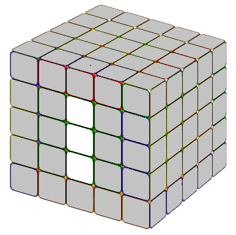
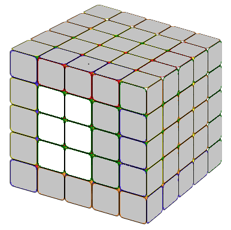
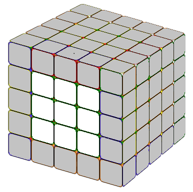

The first few centers are always easier. The last two centers may be a little difficult. The following formulas might help you.
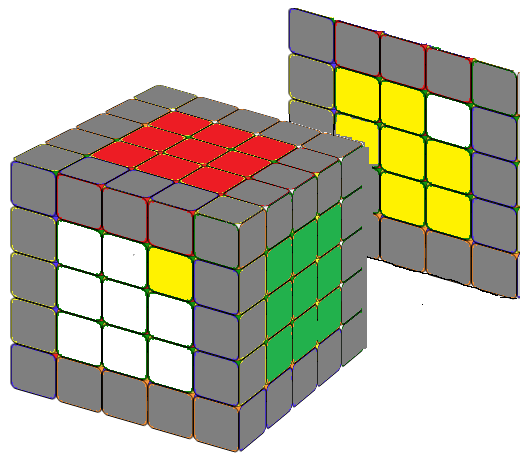
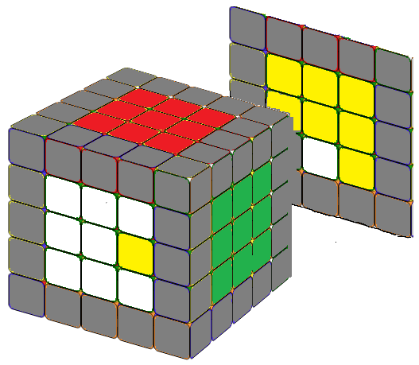
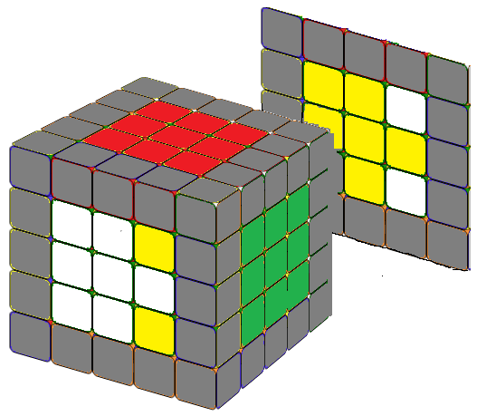
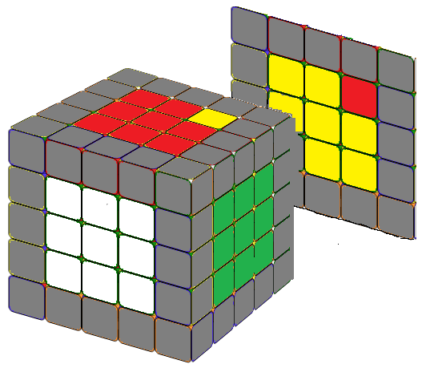
Note that since r2' = r2, you can interchange r2 and r2' in the first three formulas as you wish. We can solve a 5x5 cube center blocks the same way as we solve a 4x4 cube, i.e., we solve it in pairs (white-yellow) (red-orange) (green-blue). And if you proceed in this way, you do not need the last formula. We included it just for fun, because it is almost identical to the formula for the counterclockwise fish pattern in a 3x3 cube. Just replace the R or R' with r or r'.
For situation a, that is: we need to replace only one piece and this piece is not the center of the 1x3 block. Place the cube exactly as in Fig.a, then we can apply the formula: r2'Br2Br2'B2r2 .
For situation b, that is: we need to replace one piece and this piece is the center of the 1x3 blocks of the last two unsolved center blcoks. Place the two 1x3 blocks exactly as in Fig.b, then simply apply r2'B r2, the cube will looks similiar to Fig.a.
For situation c, that is.: the centers of the 1x3 block of the last two unsolved centers are correct, but the other two are wrong, apply the same formula r2'Br2Br2'B2r2, the cube will be in a situation similar to fig.a.
STEP 2: Combining The Edges.
 Combining edges is time consuming, but intuitive. It is similar to solving 4x4. We will still rely heavily on the formula we learned in 4x4 cube:
Combining edges is time consuming, but intuitive. It is similar to solving 4x4. We will still rely heavily on the formula we learned in 4x4 cube:
For each side there are three edges. We call the one in the third row the inner edge, the other two outer edges. The edge color reversal formula leaves the inner edge in the same position, but swaps the position of the two outer edges, while the colors of each piece in the edge block are swapped. Now let us put the inner edge to the right and the outer edges to the left.
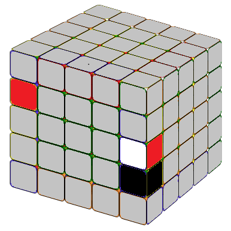
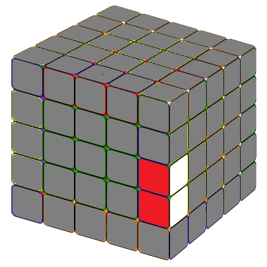
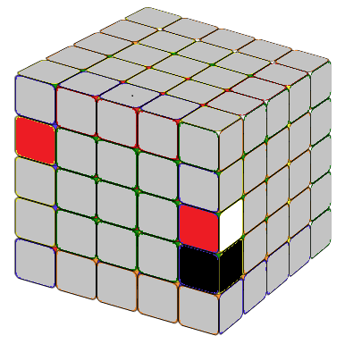
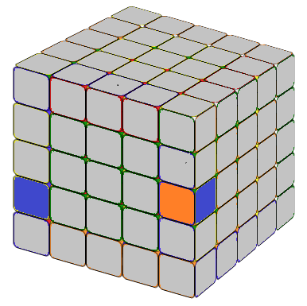
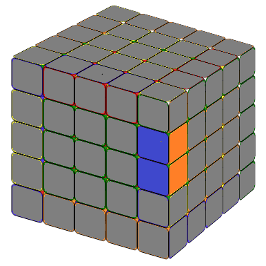
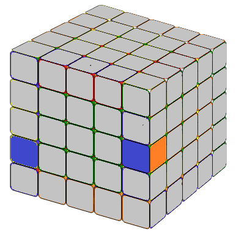

In the following 3U means: we turn three layers (U and the other two layers below it) together in the same direction of U. The idea is same for 3U' or 3R'.
After we have paired the twe edges together which including the inner edge, we put that on the right side and put the single one on the left.
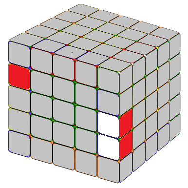
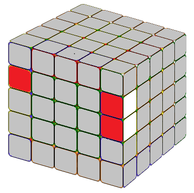
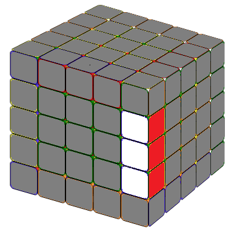
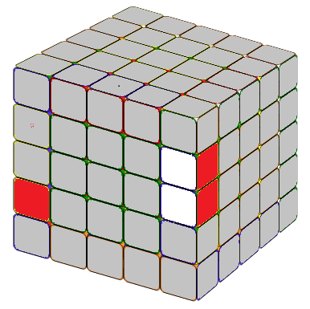
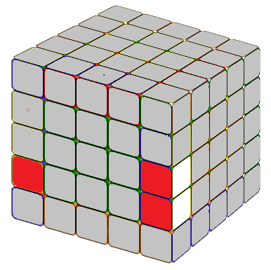

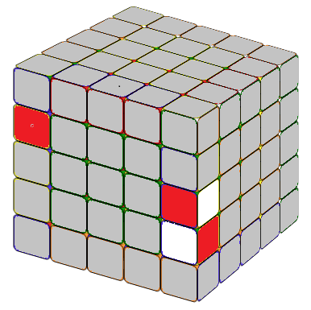
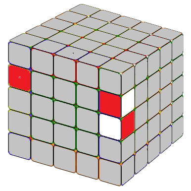
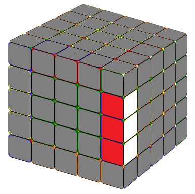
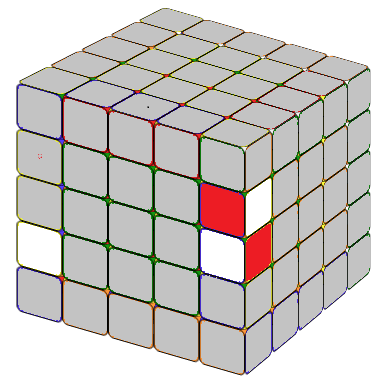
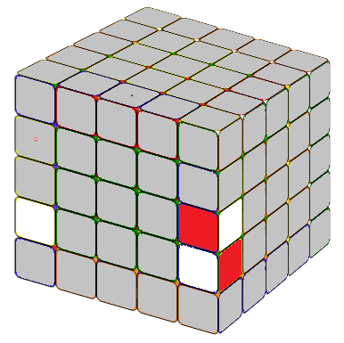
We could solve most of the edges using the above formulas.
Animation: Combining edgesTHE LAST UNSOLVED EDGE
With these formulas, we can combine the edges block by block. If you are lucky, you can solve all 12 edge blocks. But it may happen that the last edge block cannot be solved with the above method. We must deal with it on its own. If you manoeuvre the cube with the above formula, the last unsolved edge block can always look like on the picture below which can be solved with the following formula
 (rU2) x (rU2) (rU2) (r'U2) (lU2) M (r'U2) (rU2) (r'U2) r'
(rU2) x (rU2) (rU2) (r'U2) (lU2) M (r'U2) (rU2) (r'U2) r'
Notice that this is very similar to the 4x4 special case formula except an M after lU2. In the practice Mr'=3R', hence, M(r'U2) means we move three layers on the right hand side together, in direction R', then U2. x means rotate the entire tube 90 degree away from you.
STEP 3: SOLVE THE 5x5 CUBE AS IT IS A 3x3 CUBE
Now we have the 5x5 cube with solved centers (3x3 blocks) and edges (1x3 blocks). We can solve it just like a 3x3 cube. It's done!
Now you have solved the 5x5 Rubik's Cube. Enjoy!